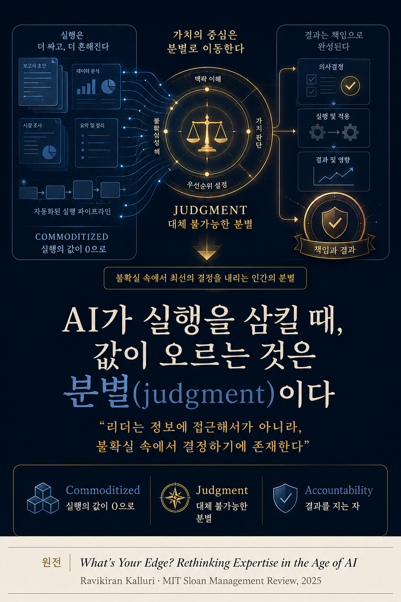
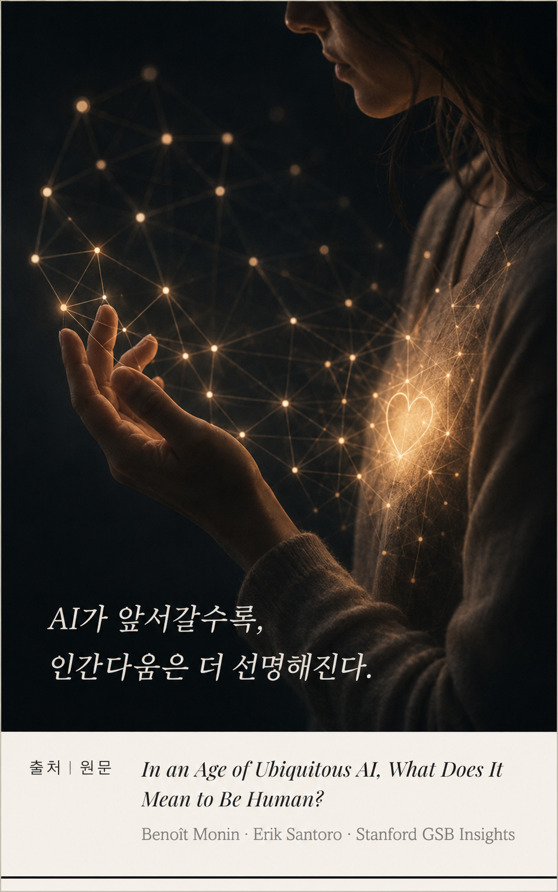
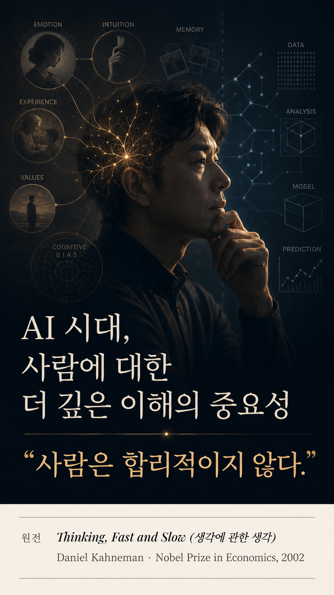

한 시간을 덜 잤다
전환 직후 월요일에 40분을 덜 잤고, 그날 손실 작업일수는 67.6% 늘었다.
빼는 쪽이 떠오르지 않는다
사람은 개선하라는 요구에 더하는 해법을 먼저 찾는다. 빼기는 못 고른 것이 아니라 안 떠오른 것이다.
할 줄 알면 가르칠 줄 아는가
숙련자는 초심자가 걸리는 시간을 과소평가하고, 그 편향은 알려 줘도 고쳐지지 않았다.
잘하던 사람을 올렸다
승진은 상이면서 배치다. 두 일이 같은 기준을 쓰지 않는데 제도는 하나뿐이다.
더 주고 덜 받는다
밖에서 온 사람에게 18% 더 주고 첫 2년은 덜 받는다. 그리고 보수는 끝내 수렴하지 않는다.
누가 하겠지
평가에 안 잡히는 일이 누구에게 가는지는 선호가 정하지 않는다. 예상이 정하고, 예상은 바뀐다.
전원을 설득하지 않는다
21%는 관습을 못 바꿨고 25%는 뒤집었다. 필요한 것은 과반이 아니라 경계다.
정하는 사람이 가장 싫어했다
이직은 3분의 1 줄었고 성과와 승진에는 차이가 없었다. 관리자들은 반대로 예측했다.
평균으로 계획했다
IT 프로젝트의 평균 초과율은 27%다. 그 뒤에 여섯 중 하나가 200%로 서 있다.
천재를 찾는 동안
재능을 타고나는 것으로 보는 조직에서는 증명이 일이 된다. 협업과 혁신과 정직이 함께 줄어든다.
기본값이 바뀌었다
선발 도구의 예측력 순서가 2022년에 바뀌었다. 1등은 구조화 면접이고 경력 연수는 .07이다.
사람을 고치려 했다
번아웃의 원인으로 지목된 자리는 일의 여섯 군데다. 처방은 거의 전부 사람에게 간다.
아니라고 하지 않는다
모델은 사람보다 49% 더 자주 동의했다. 그리고 사람들은 그 동의를 더 좋은 답으로 평가했다.
아무도 내보내지 않았다
22-25세의 AI 노출 직군 고용은 또래보다 19% 아래에 있다. 해고가 아니라 채용으로 일어난 감소다.
손잡이는 다시 달렸다
지도는 펌프를 지목했고 손잡이는 빠졌다. 그러나 설명은 받아들여지지 않았고, 유행이 지나자 손잡이는 돌아갔다.
더 많이 묻게 됐다
AI를 쓰면 동료에게 덜 물을 것 같지만 실험 결과는 반대였다. 연결이 늘지 줄지는 도구보다 설계가 정한다.
늦는 것인가 작은 것인가
값이 안 보이는 이유가 '아직 이르다'인지 '원래 작다'인지는 숫자만으로 구분되지 않는다. 구분은 보완 투자에서 한다.
빨라지고 더 깨진다
AI는 처리량을 올리면서 불안정성도 올린다. 같은 도구가 조직마다 다른 결과를 내는 이유는 들이기 전에 있던 기반이다.
틈이 사라졌다
회사는 시키지 않았는데 일이 늘었다. 늘어난 것은 시간이 아니라 밀도이고, 사라진 것은 하루 안의 틈이다.
모두가 관리자가 된다
자리는 줄어도 관리라는 일은 아래로 퍼진다. 층을 없애는 것과 권한을 내려보내는 것은 다른 일이다.
같은 사람들이었다
최악의 공장이 같은 사람들로 최고가 됐다. 바뀐 것은 사람이 아닌 구조, 곧 멈출 수 있게 만든 설계였다.
재는 순간 망가진다
AI 사용률을 평가에 넣는 순간 그 숫자는 실력을 재지 못한다. 쓰라고 하면서 쓴 티를 내면 깎는 조직에서는 숨기는 법만 는다.
무엇과 비교했는가
AI를 쓴 사람은 혼자일 때보다 나아졌다. 둘 중 나은 쪽과 견주면 평균적으로 못했다. 기준선이 답을 바꾼다.
혼자가 팀만큼 했다
AI를 쓴 한 사람이 2인 팀만큼 해냈다. 그래도 상위 10%는 팀에서만 나왔다. 팀을 꾸리는 기준이 바뀐다.
오래 했다는 말
1만 시간은 문턱이 아니라 평균이었다. 경력 연수가 실력을 설명하는 정도는 분야마다 다르고, 우리 분야에서는 가장 약하다.
목표를 바꾼 날
건널 수 없게 된 날 목표를 바꿨다. 다만 그 변경은 반대편 현장에 닿지 못했다.
쓰면서 숨긴다
직원들은 이미 쓰고 있다. 금지가 없애는 것은 사용이 아니라 기록이고, 기록이 없으면 책임도 없다.
두 번 묻지 않는다
같은 사안을 두 사람에게 주면 답이 갈린다. 조직이 그 사실을 모르는 이유는 두 번 묻지 않기 때문이다.
믿을수록 덜 따진다
확인을 건너뛰게 만드는 것은 답의 품질이 아니라 신뢰다. 감독하려면 내 답이 먼저 있어야 한다.
말로만 막았다
에이전트 사고는 모델이 틀려서가 아니라 권한이 넓어서 생긴다. 말로 한 금지와 설계된 차단은 다르다.
말하기 전에 묻는다
상대가 이미 아는 것을 알려 주는 순간 대화는 닫힌다. 샤인의 겸손한 질문과 '지금 여기의 겸손'.
인사이트 대신 아웃사이트
생각을 바꾸려면 먼저 행동해 봐야 한다. 리더는 사무실 안보다 낯선 일과 낯선 사람 사이에서 만들어진다.
먼저 파지 않았다
프랑스는 파다가 무너졌다. 스티븐스는 굴착부터 멈추고 철도와 숙소와 모기 없는 땅을 먼저 만들었다.
만든 뒤의 3년
훈민정음을 만든 것은 시작이었다. 먼저 써 보고, 반대에 답하고, 원리를 적고, 시험에 넣은 세종의 3년.
이미 기운 배
시험은 배가 넘어간다고 말했다. 그 말을 왕에게 전할 사람이 없었다. 1628년 바사호의 프로젝트 실패.
감정의 출처
감정은 데이터지 명령이 아니다. 다만 데이터에는 출처가 있다. 앞 회의의 화는 다음 결재로 흘러간다.
부끄러우면 숨긴다
사람에게는 변명이 붙고 기계에는 사실이 나온다. 리더가 받는 보고는 이미 걸러져 있다.
사람이 있다는 착각
최종 승인은 사람이 한다. 그런데 그 기록만 남고 판단은 이미 기계가 했을 수 있다.
조선 정조 대왕의 프로젝트 리더십
10년 걸릴 공사를 2년 8개월에. 사람을 압박하지 않고 설계와 기술로 이룬 조선의 프로젝트 리더십.
보이지 않는 청구서
AI가 만들어 낸 산출은 보이고, AI가 만들어 낸 일거리는 보이지 않는다. 그 청구서는 사람에게 온다.
밝히면 잃는다
AI를 썼다고 밝히면 신뢰가 줄어든다. 그런데도 밝혀야 하는 이유가 있다.
어제를 배운 기계
사람의 편견을 지우려 들인 AI가 어제의 데이터에서 그 편견을 배운다. 공정은 가정이 아니라 감사 항목이다.
거꾸로 배우기
AI 앞에서 전문성의 기울기가 뒤집혔다. 아래에서 위로 배움이 흐르게 하는 조직만 격차를 줄인다.
위로를 맡기면
덜 외로우려다 더 외로워진다. AI에게 곁을 맡길수록, 사람에게 가는 길이 조금씩 멀어진다.
다시 짜는 법
얹지 말고 다시 짜라 했다(Vol. 15). 이번 편은 그 다시 짜기를 네 단계 실습으로 옮긴다.
꺼두는 시간
일이 꺼지지 않으면 사람이 꺼진다. 회복은 마음이 일에서 떨어져 있는 동안 일어난다.
끄는 자리
경계 밖에서 AI는 돕는 대신 더 틀리게 한다. 쓰는 법만큼, 안 쓰는 자리를 아는 것이 분별이다.
감시가 된 편의
돕겠다며 들어온 도구가 동시에 지켜보는 도구가 된다. 리더가 그을 것은 편의와 감시 사이의 선이다.
AI 1:1 설계도
상태 보고는 도구가 대신할 수 있다. 그러면 1:1은 원래 목적, 곧 사람에게로 돌아간다.
빨리빨리
빨리빨리는 나라를 세운 강점이자 다리를 무너뜨린 약점이었다. AI 시대엔 늦추지 말고 속도를 가른다.
말할 수 있는 위계
권력거리가 큰 곳에서 심리적 안전감은 선언이 아니라 설계다. AI의 권위가 겹치면 벽은 하나 더 선다.
집중력이라는 자원
화면 앞 집중은 47초로 줄었다. AI가 산출을 늘려도 그것을 붙들 집중력은 유한한 자원이다.
떠넘길 수 없는 것
AI에 결정은 맡겨도 책임은 떠넘길 수 없다. 공백은 통제 있는 자리에 붙들어 메운다.
숙련의 재발명
지름길이 흔해질수록 희소해지는 것은 의도된 연습이다. 숙련은 고른 어려움에서 자란다.
초안 너머
AI가 초안을 쓰는 시대, 고칠 것은 문장이 아니라 그 문장을 고른 판단이다.
느림의 값
AI가 실행을 공짜로 만들수록 드러나는 것: 빨라지면 안 되는 결정들. 값은 언제 느려질지 아는 데 있다.
평균으로 끌리다
AI는 개인의 창의성을 높이지만 집단의 다양성은 줄인다. 리더가 지킬 것은 평균이 아니라 바깥값이다.
지도가 없을 때
정보가 넘칠수록 모자란 건 의미다. 지도가 없을 때 쓸 만한 해석을 지어 사람들을 움직이게 하는 일.
방향을 고르다
기술은 저절로 좋아지지 않는다. AI가 누구에게 이로울지는 무엇을 자동화하고 무엇을 넓힐지의 선택이 정한다.
배우는 속도
직무는 빨리 바뀌고 배움은 못 따라간다. 그 격차를 메우는 건 갈아 끼우기가 아니라 다시 기르기다.
고쳐 생각하다
AI가 확신을 값싸게 내주는 시대, 리더의 근육은 답을 내는 힘보다 고쳐 생각하는 힘.
되돌릴 수 있는가
AI에 맡길 결정과 사람이 쥘 결정을 가르는 선. 능력이 아니라 되돌림·검증·타당성이 정한다.
만드는 동안
사람을 움직이는 건 진척의 감각. AI가 만드는 과정을 대신할 때 의미는 어디서 오는가.
일을 다시 짜다
88%가 AI를 쓰지만 값이 남는 곳은 6%. 차이는 도구가 아니라 다시 짠 조직에 있다.
나누어 기르다
코칭은 통째로 자동화되지 않는다. 과업마다 AI와 사람의 몫을 나누어 설계하는 일.
좋은 실패
모든 실패가 배움은 아니다. 기본적·복합적·지적 실패를 가려내는 일.
곁에 있다는 것
심리적 안전감과 공감은 함께 일하기로 한 순간부터 작동하는 조건이다.
사라진 사다리
AI가 초급자의 일을 대신하면서 끊기는 사다리. 도제를 다시 설계하라.
신뢰의 화폐
그럴듯함이 흔해질수록 조직의 진짜 화폐는 신뢰다. 진정성·논리·공감으로 설계한다.

분별의 값
실행이 공짜가 될수록 값이 오르는 것. 무엇을 할 가치가 있는지 가려내는 판단.

브레인 캐피탈
병목은 기술이 아니라 사람의 두뇌다. 브레인 파워 조직의 다섯 원칙.

인간의 자리
AI가 유능해질수록 사람들은 '진짜 인간다움'을 더 소중히 여긴다.

사람에 대한 더 깊은 이해
합리적 계산을 AI가 대신하는 시대, 비합리적 인간을 이해하는 힘.
가치가 사는 곳
생산성은 입장권일 뿐. AI가 진짜 가치를 만드는 네 지점.
결단력의 부재
AI가 지운 건 정보가 아니라 변명이었다. 드러난 결단력의 부재.
질문의 주권
답의 문화에서 질문의 문화로. 큰 질문을 가진 리더가 큰 변화를 만든다.
리더십의 역설
가장 큰 강점이 가장 큰 맹점이 되는 순간, 강점이 만든 그림자.
AI 시대 리더십의 사각지대
지능을 계산으로만 정의할 때, 인간은 무엇을 잃어가는가.
이 분류의 가장 최근 글은 맨 위 이번 주 글에 있습니다.